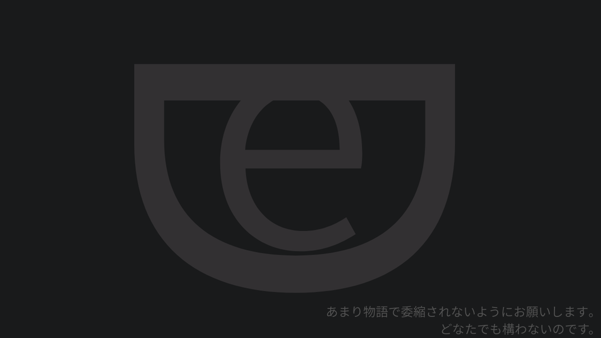

詩、みたいなものをよく書く。そういう時は大抵感情が高ぶっている。感動するとか、悲しくなるとか、怒るとか。足りないことばで言うならそうだった。
詩みたいなもの、というのは、詩といえる風なクオリティにはとても及ばないからだった。
でもクオリティはどうでも良かった。詩、もどきじゃなきゃ言葉が足りなくなるから。勝手にそういう風に言葉を運んでしまう。詩を書こうなんて思ったことは無い。
写真を撮る。チラシを切り抜く。美味しかったものをメモにいれて。
友達と話す。家族と話す。私の好きなものを話したら、よく分からなくなる。
写真をあげる。見えた事をあげる。140字に収める。
「エモい」を見る。感想を見る。普通ってこんなんか。
言葉が足りない。言葉にしてはいけない。だから写真を撮る。チラシを切り抜く。「あれ」を感じた物を保存しておく。ふと「死ぬ」が浮かぶ。
それも保存しておく。
論理的です。小難しいなあってよく言われます。僕が小難しいのではなく小難しいと言う人が何も知らないだけです。僕は至って冷静です。小難しいという人が感情的なだけです。僕は僕です。僕という人が理解してもらえないだけです。僕は論理的なんかじゃありません。合っているはずなのに話が通じないのはどうしてです？ 小難しいのは分かっているんです。分かってほしいだけです。寂しいだけです。
夢を持ってるんだ。いいね。人を救いたいんだ。いいね。私もよくわかるよ。あなたはいい人だね。
私？ 私は画家になりたいんだ。前に言っていたっけ。
夢、別に、夢じゃないよ。
ううん、画家になれないなら死んだ方がいいんだ。
違うよ。夢じゃないよ。お願いだから、夢だなんて言わないでくれ。
早く死ぬべき七月ぐらいからずっと思ってる。どうやろうかずっと考えてる。早く目覚めるのもどうでもいい。昼に起きて、ずっと音楽を聞いて、今日作る物を考える。結局また詞に死の文字が入る。嫌だなと思いつつ、作るのが馬鹿みたいに面白かった。毎日こうだわ（笑
十四歳ぐらいからじゃない？ 昔から見てた友達を見てたらもやってした。
友達が盛り上がってたらもやってした。解釈違いじゃない？ ねえ？ 野暮か。
なんだろう、見えてるのに語彙力ないや。どうにか頑張ったら、「深淵」？ ？
人は知っている痛みで住む世界が変わるという持論があるけれど、私が、あいや、私の言葉が視界に入ったら世界観乱れる感じとかする？ まあ、みんな誰かと話せば世界観歪むけど、私はどのぐらいあなたの世界観壊せてる？
生きる事が最大の自傷行為になってる人っているのかな？
でも理論上はいるんじゃないの？
会ったことないけど。知りたいわ。気になる。
想像のつかないものを全部かわいそうに分類しないでください。理解の及ばないものを全部めんどくさいに分類しないでください。仕方がなくこうしていることを中二病と呼ばないでください。なにもわかってない。これは奇のてらいじゃないです。本物です。だったら近づかないでください。僕を見ないでください。これを若さと呼ばないでください。説明させてください。お願いだから。やめてください。僕に言っています。僕の言葉を奪わないでください。僕の言葉で説明させてください。お願します。すいません、
この声が聞こえますか。それなら安心します。
おやすみなさい。
堪らなく苦しいけれどこれが治ったところで僕の唯一の尊厳がなくなるから、あなた方を軽蔑する。手を振り払う。それで、ここに誰もいない事に気づく。
あ、この人はきっと絶望しきってるなあ。でもこれは気分に溺れてるだけだなあ。論理がないや。
元気になったら、幸せだろうな。
この子は憂鬱とは無縁だなあ。でも、痛みには敏感だろうな。それと寂しさと。
私が視界に入ったらかわいそうだ。ばいばい。
！当サイトのコンテンツを転載される方は、rulesページをご覧ください。

DESKとはDESKが求める知性、感性、感受、感覚、痛みを、持つ方々のための場です。
DESKは主にDiscordサーバーでのメンバー同士の相互なる認識を提供します。
DESKとはどういった場であるかは定義いたしません。審査制の机です。
創作の作業机であるのか、学ぶ勉強机であるのか、論じるための円卓であるのか、
ただの机です。
人と人同士の繋がりを主たる目的としている方はいかなる場合も審査において承認できません。
また、仮に論理的に先述の目的が主であったとしても承認要件を満たすであろう方にとっては、そうではありません。
（これを訂正できるのならば教えてください。）
あなたが欲しているのは人と人ではなく[自己、感受、思考]と[自己、感受、思考]同士の繋がりを主たる目的としています。
→[改行]ただの机です。
ただの机です。そういう風にここをDESKと名乗るようになったのは特に何も考えは込めていなかった。ただの場を作りたかったとき、私のような人間を集めて、話すでも何かを作るでも独り言をするでも、ただただ、なんでもよく、互いがいるだけの、互いを探さなくて住むための場所。というのが一つの考えであったから、適当な言葉を探した。それが机で、机のままだと不格好だからDESKとした。
こういう物を作るのはただの楽しいことで、何にも、誰かの支えになるだとか、そういう意図なんかなく、話し相手を集めたいだけのこれ。
作っている間は楽しいけど。間はね。
六十分前までの楽さ、をすっかり思い出せない今に、なんとなく動けるように曲とプレイリストと。どうだろう、私をそのまま投影できる曲なんか知ってたっけな。
と、思ったことをこうして小説らしく書き起こしているのだけれど。ところで、AboutDeskはもう読んだのかな。途中で離脱されない限りはどうしようがこれは作品として成立しますよ。最後まで読んでもらえると嬉しいです。気付かないそれ自体もコンセプチュアルアートみたいなものです。で、これ自体も最後まで読んでくださいね気づかれたのならば。左側の言葉は私が書いた、それらしい言葉たちです。共感してもらえたら狙い通りです。
連日、一日中ずっとテキストをいじくりまわしてます。コードにしろ（素人ですけどね）、こういう作品にしろ、チャットもですね。そのせいか頭が痛いんです。
見せ場では感情、感情を持ってくるようにしています。痛みを文字に焼き付けられるように。没。
私はこうして作品を作っていないと私自身を誰彼に認めてもらえないので没。
どうして作品を作るかというと、言葉にでき没。
言葉にはできるんです。でもどうしても汚いので。没です。
もっとひどい没を見せてあげます。
助けてくれやしないでしょうか
とはいえなにがどうというわけでもないですけど
どうか読んでください
分量だって多くないですから、、、（そういう問題でもないとは思いますけど）
認識されないものは実在できなくなります
助けてください
なにも語れないです
何の言葉もいらないので、助けようとしたとしてもどうにもなりはしないので
作品たちとめをあわせてはくれないでしょうか
すいません本当に
認識できる人自体が滅多にいないのはわかっていただけるとは思いますが、
願いです
いや、ただの作品です
なにもないです特別なものは
そこらへんの石ころを見て、あ、あるな
それが救いです
きっと
迷惑ですいません
怖いので、死にたくはないので、これには返信なさらないでください
タイムラインに流れてきたから見てみた、ということにして、このdm自体は目に入れないでください
返信はやめてください
眠いので眠ります没、というのは嘘で、非常によくできた出力の仕方です。すいません。これ自体は私の言葉なので、DMの内容を晒すことにはなってしまいますけど、お許しください。【伏せます】様。これ以上ご迷惑はおかけしないようにします。
辛いからこういうことをやっている？ と思われないでください。楽しいからやっているだけです。楽な時は辛いからこれをやっているなど思っていません。でもこれをやるしかありません。いいや、そうでもないかも。こうやって揺らぐので感情はただの感覚だと思うようにしています。とっても嫌いです。先生は、こういう風にはなりません。私だけがこうなります。私も表現者です。先生も表現者です。私の言葉を没にするのは先生です。
先生がしないことをやってみようと思います。先生は僕という私小説を書いている一介の表現者です。
これも没。